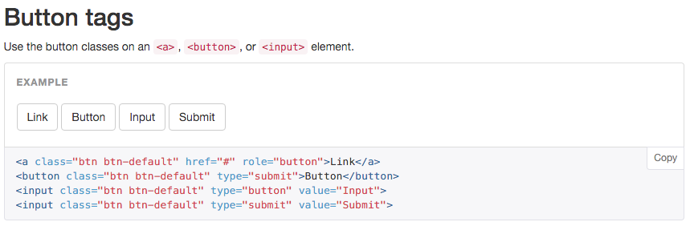

Front-end style guides
What is a style guide?
- Code standards document
- Visual language (typography, colours, ...)
- Sometimes called pattern library
Visual language

Pattern library
Why do we need a style guide?
- Cleaner code
- Consistency (code / visual)
- Time saving
- Avoid CSS mountain
- Easier to test (layout)
Some examples
Making our own
- Identify elements and components to be added
- Start developping base styles for core elements
- Add components which override base styles (search boxes, messages, ...)
- Add layout and slot components into place
Document code practices: semantic names, ...
Starting points
- Barebones - An initial directory setup, style guide and pattern primer
- Bootstrap SCSS
- Responsive grid, extensive pattern library
- Mature: over 137,500 websites use it
Integration with UUW
Developped independently from web application.
Built minified CSS updated when required
UUW would still have a stylesheet, but should be kept to a minimum.